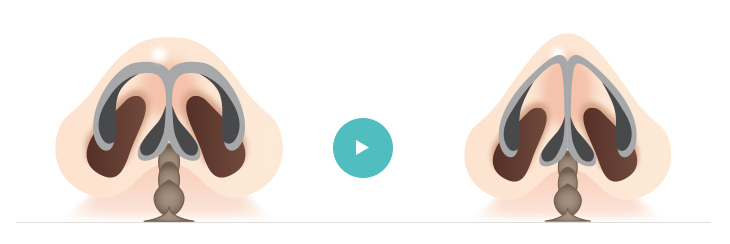
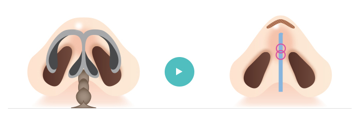

Asia Beauty Center
ศัลยกรรมตกแต่งปลายจมูก
หากมีปลายจมูกโด่ง ปราดเปรียวขึ้น
ไม่เพียงแต่จะช่วยให้หน้าดูมีมิติมากขึ้น แต่ยังช่วยให้ดูอ่อนเยาว์ลงได้อีกด้วย
Nose plastic surgery
ศัลยกรรมตกแต่ง
ปลายจมูก
หัวใจของใบหน้า
หากมีปลายจมูกโด่ง ปราดเปรียวขึ้น ไม่เพียงแต่จะช่วยให้หน้าดูมีมิติมากขึ้น แต่ยังช่วยให้ดูอ่อนเยาว์ลงได้อีกด้วย
ศัลยกรรม
ตกแต่งปลายจมูก
Nose plastic surgery
จากที่ดั้งจมูกโด่งอยู่แล้วแต่ปลายจมูกทู่และปลายจมูกดูกว้าง เข้ามาปรับรูปทรงจมูกให้ดูเพอร์เฟคมากยิ่งขึ้นด้วยการศัลยกรรมตกแต่งปลายจมูก เพราะจมูกเป็นศูนย์กลางของใบหน้า การศัลยกรรมตกแต่งปลายจมูกไม่เพียงแต่ช่วยให้หน้ามีมิติมากขึ้น แต่ยังช่วยให้จมูกดูปราดเปรียวขึ้นและช่วยให้ดูอ่อนเยาวน์ลงได้อีกด้วย
ปัจจัยหลัก
ในการศัลยกรรมปลายจมูก
- ปลายจมูกยาวเกินไปหรือสั้นเกินไป
- อยากเปลี่ยนแค่ปลายจมูกเท่านั้น
- ปลายจมูกผิดปกติ
- ศัลยกรรมเสริมจมูกเกิดข้อผิดพลาดเลยส่งผลให้ปลายจมูกดูแปลกไป
- ดั้งจมูกโด่งแต่ปลายจมูกแบนจึงทำให้ภาพรวมจมูกดูแบนทั้งหมด
วิธีศัลยกรรม
ตกแต่งปลายจมูก
วิธีศัลยกรรมปลายจมูกแตกต่างกันตามรูปทรงของจมูกแต่ละคน รูจมูกใหญ่ ดูกว้าง ต้องตัดเนื้อเยื่อกระดูกอ่อนบริเวณปีกจมูกและปรับให้ชิดกัน
ปลายจมูกทื่อ
ความสูงและความกลมมนของปลายจมูกนั่นสามารถแก้ไขได้ด้วยวิธีการทำให้กระดูกอ่อนตรงปีกจมูกทั้งสองข้างมาชิดติดกัน
ปลายจมูกแบน

ในกรณีที่ปลายจมูกแบน สามารถปรับให้ดูสวยงามมีสไตล์และได้ความสูงตามที่ต้องการได้ โดยใช้ส่วนประกอบที่เหมาะสมเช่น กระดูกอ่อนหลังใบหู กระดูกอ่อนจมูกเป็นต้น
กระดูกอ่อนปีกจมูกผาย
ปลายจมูกดูกว้างเพราะกระดูกอ่อนปีกจมูกผาย ปรับแก้รูปกระดูกอ่อนโดยการผูกกระดูกอ่อนปีกจมูกให้ติดกัน ก็จะได้ปลายจมูกที่สมบูรณ์
กระบวนการศัลยกรรมจมูก
รพ. ศัลยกรรมตกแต่ง BongBong
1
แสกนจมูกด้วยเครื่อง
MOTIVA X DIVINA
2
คำนวณได้อย่างแม่นยำจากภาพถ่าย
vertex 3D CT
3
ปรึกษาและให้คำแนะนำแบบละเอียดเพื่อวางแผน
ศัลยกรรมจมูกที่เหมาะกับลูกค้าทุกท่าน
จุดเด่นของศัลยกรรมจมุกของรพ. Bongbong
Bong Bong Plastic surgery clinic
ใช้เครื่องตรวจภายในจมูก กับ CT แสกน 3มิติที่ทันสมัย
ออกแบบรูปทรงจมูกที่มีสไตล์มีความเป็นตัวของตัวเองจากการวิเคราะห์ภาพรวมของใบหน้าเมื่อจมูกมารวมกันหลังจากตรวจภายในจมูกและ CT แสกน 3มิติ
ดำเนินการปลอดภัยจากผู้เชี่ยวชาญด้านการศัลยกรรมจมูก
มีผู้เชี่ยวชาญด้านการศัลยกรรมจมูกและวิสัญญีแพทย์คอยดูแลและสรรสร้างจมูกที่สวยงาม
เทคนิคพิเศษจากการเก็บภาพกราฟฟิกของลูกค้าที่หลากหลาย
ลูกค้าสามารถเลือกรูปแบบจมูกที่เข้ากับใบหน้าของตัวเองมากที่สุด ได้จากภาพกราฟฟิกที่เราเก็บข้อมูลมาจากลูกค้าที่เคยเข้ามารับการศัลยกรรมกับเราหรือลูกค้าที่เข้ามาแก้จมูกกับเรา
ใช้กระดูกอ่อนเชิงกรานและเนื้อเยื่อผิวหนังของตนเอง
ที่รพ. ศัลยกรรมตกแต่ง BongBong เราศัลยกรรมจมูกอย่างปลอดภัยเพราะเราใช้กระดูกอ่อนเชิงกรานหรือเนื้อเยื่อผิวหนังของตนเองซึ่งเข้ากันได้กับร่างกายตนเอง (สามารถใส่ซิลิโคนข้างบนกระดูกอ่อนหรือบนเนื้อเยื่อผิวหนังได้เช่นกัน)
385 ซอยสุขุมวิท 63 แขวงคลองตันเหนือ เขตวัฒนา กรุงเทพมหานคร 10110
Tel. (+66) 2 002 1919 | abcthailandgroup@gmail.com
©2018. ASIABEAUTY-CENTER.COM ALL RIGHT RESERVED.